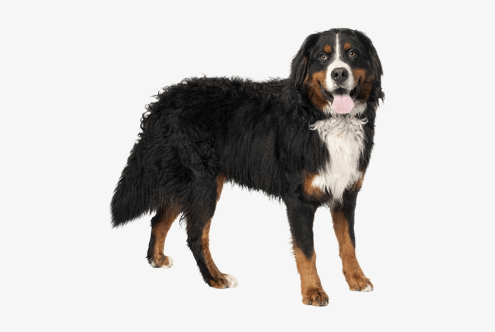
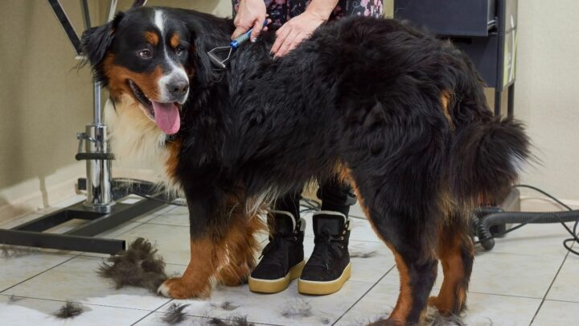

The Bernese Mountain Dog (German: Berner Sennenhund) is a large dog breed , one of the four breeds of Sennenhund-type dogs from the Swiss Alps. These dogs have roots in the Roman mastiffs. The name Sennenhund is derived from the German Senne ("alpine pasture") and Hund (hound/dog), as they accompanied the alpine herders and dairymen called Senn. Berner (or Bernese in English) refers to the area of the breed's origin, in the canton of Bern. This breed was originally kept as a general farm dog. Large Sennenhunde in the past were also used as draft animals, pulling carts. The breed was officially established in 1912.
Like the other Sennenhund, the Bernese mountain dog is a large, heavy dog with a distinctive tri-colored coat, black with white chest and rust-colored markings above eyes, sides of the mouth, front of legs, and out around the white chest. However, it is the only breed of Sennenhund dogs with a long coat. The ideal of a perfectly marked individual gives the impression of a white horseshoe shape around the nose, which is always black. There is a white “Swiss cross” on the chest when viewed from the front. A “Swiss kiss” is a white mark located typically behind the neck, but may be a part of the neck. A full ring would not meet the type standard. The AKC breed standard lists, as disqualifications, blue eye color, and any ground color other than black.
 Bernese Mountain Dog's only attack if really needed (its owner is getting attacked). The temperament of individual dogs may vary, and not all examples of the breed have been bred carefully to follow the standard. All large breed dogs should be well socialized when they are puppies, and given regular training and activities throughout their lives.
Bernese are outdoor dogs at heart, though well-behaved in the house; they need activity and exercise, but do not have a great deal of endurance. They can move with amazing bursts of speed for their size when motivated. If they are sound (no problems with their hips, elbows, or other joints), they enjoy hiking and generally stick close to their people. Not being given the adequate amount of exercise may lead to barking and harassing in the Bernese.
Bernese mountain dogs are a breed that generally does well with children, as they are very affectionate. They are patient dogs that take well to children climbing over them. Though they have great energy, a Bernese will also be happy with a calm evening.Bernese work well with other pets and around strangers. They are excellent guardians. They tend to bond with one owner or family, and are somewhat aloof and standoffish towards strangers.
Historically, in some locales at least, the breed was called a Dürrbachhund or Dürrbächler, for a small town ( Dürrbach) where the large dogs were especially frequent.
The dogs have roots in the Roman mastiffs and were used as an all purpose farm dog for guarding property and to drive dairy cattle long distances from the farm to the alpine pastures. The farmers used the dogs to transport their carts of milk and cheese and were known by the locals as "Cheese Dogs." In the early 1900s, fanciers exhibited the few examples of the large dogs at shows in Berne, and in 1907 a few breeders from the Burgdorf region founded the first breed club, the Schweizerische Dürrbach-Klub, and wrote the first Standard which defined the dogs as a separate breed. By 1910, there were already 107 registered members of the breed. There is a photo of a working Bernese Mountain Dog, dated 1905 at the Fumee Fall rest area in Quinnesec, MI.
The Bernese's calm temperament makes them a natural for pulling small carts or wagons, a task they originally performed in Switzerland. With proper training they enjoy giving children rides in a cart or participating in a parade, such as the Conway, New Hampshire holiday parade. Regional Bernese clubs often offer carting workshops. Carting competitions are held for the breed
On July 1, 2010, the Bernese Mountain Dog became eligible to compete in AKC Herding Events. Herding instincts and trainability can be measured at noncompetitive herding tests. Berners exhibiting basic herding instincts can be trained to compete in herding trials
Bernese Mountain Dogs shed year-round, and the heaviest shedding is during seasonal changes. Usually the Bernese will only require a brushing once a week, with more in spring and fall, to keep its coat neat and reduce the amount of fur on the floor and furniture. The Bernese will only require a bath about once every couple of months or so, depending on how high its activity level is and how often it spends its time in the dirt.
Special attention should be paid to the ears of the Bernese Mountain Dog, as they can trap bacteria, dirt, and liquid. The risk of an ear infection drops with weekly ear cleanings using a veterinarian-recommended cleanser.
Wikimedia Foundation. (2021, December 13). Bernese mountain dog. Wikipedia. Retrieved January 27, 2022, from Bernese Mountain Dog Wikipedia